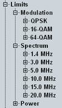

Limit Settings
The limits in the configuration dialog define lower and/or upper limits for the modulation and spectrum results. For the modulation results, separate limits can be set for the individual modulation schemes. For the spectrum results, separate limits can be set for the individual channel bandwidths.
For details, see "Limit Settings and Conformance Requirements".

Limit settings
The limits can be configured via the remote commands described in the following sections:
Some examples are listed below.
Remote command: